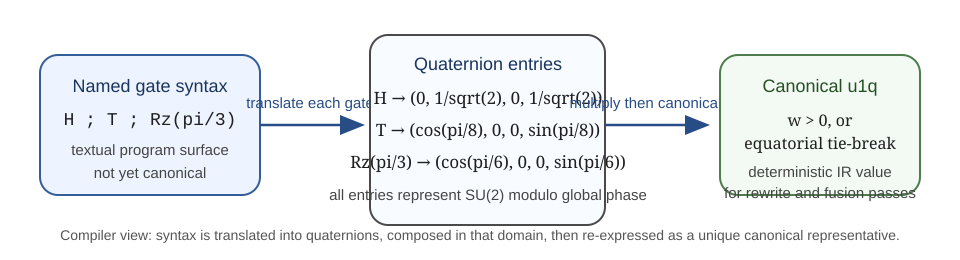
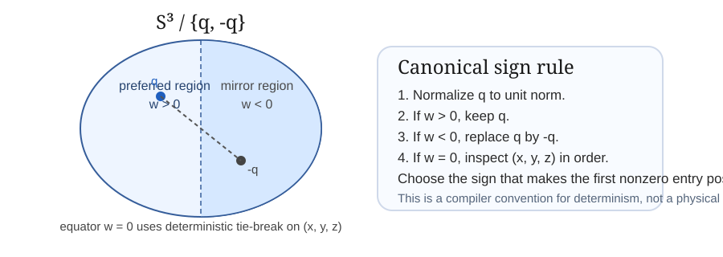

1. Introduction
The first paper in this series established the fixed mathematical convention used here: after removing overall phase, a single-qubit gate action may be represented by an element of SU(2), and under a chosen standard map Φ that element corresponds exactly to a unit quaternion. The present paper moves from language to infrastructure. Its purpose is to define a deterministic internal representation for single-qubit circuit structure rather than to restate quaternionic geometry for its own sake.
Compiler pipelines need internal forms that separate semantic equivalence from surface syntax. A gate list such as H ; T ; Rz(pi/3) is useful as source-level notation, but it is not canonical. Distinct spellings can represent the same single-qubit action modulo global phase, and even a fixed matrix representation carries a sign ambiguity after passage from U(2) to SU(2). A compiler-facing IR must therefore do more than preserve meaning; it must also choose a deterministic representative.
This paper defines a canonical single-qubit IR element called u1q. Informally, u1q stores four real numbers (w, x, y, z) satisfying w2 + x2 + y2 + z2 = 1, interpreted as the unit quaternion q = w + x i + y j + z k. Because the induced single-qubit action modulo global phase is unchanged by q ↦ -q, the paper supplements the raw quaternion representation with a canonicalization rule that chooses one representative from each pair {q, -q}.
The intended use is narrow and practical. The IR applies only to single-qubit circuit segments: consecutive single-qubit gates on one wire between entangling boundaries. It does not describe the internals of entangling gates, and it does not claim to be a complete universal multi-qubit circuit IR. The contribution is a representation layer suitable for deterministic translation, fusion, comparison, and rewrite logic on single-qubit structure.
2. Background and dependency on paper 1
Single-qubit gates live fundamentally in U(2). As shown in qqc-001-foundations, every gate U ∈ U(2) admits a representative V ∈ SU(2) after removal of overall phase, and that representative is unique up to multiplication by -1. Under the fixed convention
Φ(w + x i + y j + z k) = w I - i (x σx + y σy + z σz)the unit quaternions form a Lie-group model of SU(2). Composition of representative gates corresponds to quaternion multiplication. The present paper adopts that convention without change.

3. Definition of the canonical quaternionic IR
Under the fixed map Φ, the quaternion q represents an SU(2) element, hence a single-qubit gate action modulo global phase. The IR is therefore a semantic representation of single-qubit action rather than a direct preservation of source-level gate names.
The proof is the same sign ambiguity already present in qqc-001-foundations: if V ∈ SU(2) is a representative, then -V induces the same physical single-qubit action on pure states, and under Φ the two representatives correspond to q and -q.

4. Canonicalization rules
A raw quaternion coordinate tuple is not yet a canonical IR value. In implementation settings, floating-point drift may perturb unit norm, and the pair {q, -q} leaves a sign ambiguity. This section defines the deterministic map used to produce canonical representatives.
- If w > 0, set S(q) = q.
- If w < 0, set S(q) = -q.
- If w = 0, inspect (x, y, z) in lexicographic order and choose the sign for which the first nonzero component is positive.
- If q = (\pm 1, 0, 0, 0), the rule leaves the identity class at (1, 0, 0, 0).
The proof is immediate from the construction. Normalization preserves sign pairs, and the sign rule explicitly chooses one side of the pair. The hemisphere rule w > 0 implements a shortest-geodesic convention on S3; the equatorial tie-break is needed because w = 0 alone does not distinguish q from -q.
5. Translation from named gates into quaternion IR
Source-level circuits usually arrive as named gates or parameterized rotation syntax. The purpose of translation is to map that syntax into semantic single-qubit actions and then into canonical u1q tuples.
Special gates are obtained by substitution and then canonicalization where needed. The table below records the resulting canonical representatives.
| Gate | Representative quaternion | Canonical u1q |
|---|---|---|
| I | 1 | (1, 0, 0, 0) |
| X | i | (0, 1, 0, 0) |
| Y | j | (0, 0, 1, 0) |
| Z | k | (0, 0, 0, 1) |
| H | (i + k) / sqrt(2) | (0, 1/sqrt(2), 0, 1/sqrt(2)) |
| S | (1 + k) / sqrt(2) | (sqrt(2)/2, 0, 0, sqrt(2)/2) |
| S† | (1 - k) / sqrt(2) | (sqrt(2)/2, 0, 0, -sqrt(2)/2) |
| T | cos(pi/8) + k sin(pi/8) | (cos(pi/8), 0, 0, sin(pi/8)) |
| T† | cos(pi/8) - k sin(pi/8) | (cos(pi/8), 0, 0, -sin(pi/8)) |
Z ; S ; T and a fused canonical tuple carry the same single-qubit action modulo global phase, but only the latter is intended as a stable internal normal form.
6. Composition and segment representation
Within such a segment, adjacent single-qubit gates may be fused by quaternion multiplication.
The order matters: the first gate applied to the state appears on the right in quaternion multiplication, matching matrix composition under Φ(q2 q1) = Φ(q2) Φ(q1).

7. Worked examples
7.1 Example: H ; T ; Rz(pi/3)
The gate list translates to
- H ↦ (0, 1/sqrt(2), 0, 1/sqrt(2))
- T ↦ (cos(pi/8), 0, 0, sin(pi/8))
- Rz(pi/3) ↦ (cos(pi/6), 0, 0, sin(pi/6))
Multiplying in application order and canonicalizing gives the fused representative
(0.560985526797, -0.430459334577, -0.560985526797, -0.430459334577).This tuple is deterministic under the sign rule even though the same gate action could also be written by the negative quaternion.
7.2 Example: Rx(pi/2) ; Ry(pi/2)
The two gates translate to (sqrt(2)/2, sqrt(2)/2, 0, 0) and (sqrt(2)/2, 0, sqrt(2)/2, 0). Their product canonicalizes to
(0.5, 0.5, 0.5, -0.5).The representation is shorter than an equivalent named-gate string and is already ready for equality comparison or further fusion.
7.3 Example: Z ; S ; T
Here the first gate lies on the equator w = 0, so the example exercises the tie-break convention implicitly. The fused canonical representative is
(0.923879532511, 0, 0, -0.382683432365).The negative of this tuple is semantically equivalent but rejected by the canonicalization rule because it lies in the opposite hemisphere.
7.4 Example: segment extraction in a two-qubit circuit
Consider the circuit fragment
q0: ── H ── T ──●────── T† ── Rx(pi/4) ──
q1: ─────────────X────────────────────────The paper does not attempt to encode the controlled-NOT. Instead it extracts two single-qubit segments on q0:
- segment A:
H ; Twith canonical fused tuple (0.270598050073, -0.653281482438, -0.270598050073, -0.653281482438) - segment B:
T† ; Rx(pi/4)with canonical fused tuple (0.853553390593, 0.353553390593, 0.146446609407, -0.353553390593)
This illustrates the intended scope: entangling gates are boundaries, while the single-qubit runs between them are translated into the canonical IR.
8. Standard mathematics vs. RQM Technologies framing
8.1 Standard facts used here
The following are standard rather than project-specific: single-qubit gates live in U(2); modulo global phase they admit representatives in SU(2); unit quaternions form a Lie-group model of SU(2); and composition of representatives corresponds to quaternion multiplication under a fixed convention.
8.2 Project-specific IR choices
The project-specific contribution of this paper is the compiler-facing representation design: choosing the u1q record format, requiring deterministic normalization and sign canonicalization, preferring the shortest-geodesic hemisphere w ≥ 0, and fixing a lexicographic equator tie-break. These are engineering conventions for a canonical IR, not claims of new mathematics.
9. Scope, limitations, and non-claims
- This paper defines only a single-qubit representation layer.
- It does not define a full multi-qubit quaternionic circuit IR.
- It does not model the internals of entangling gates.
- It does not prove optimization advantage, runtime advantage, or compiler superiority.
- It does not replace standard matrix methods or existing SDKs.
- It does not provide a full compiler implementation or execution backend.
10. Conclusion
The paper's claim is modest and infrastructural. For single-qubit circuit segments, a deterministic quaternionic IR provides a clean canonical layer between named gate syntax and rewrite logic. Because the IR stores representative SU(2) data modulo global phase in a canonicalized quaternion form, it is suitable for stable translation, fusion, and equivalence handling without changing the underlying physics or denying the standard matrix formulation.
Appendix A. Implementation notes
In floating-point settings, normalization should be applied with a small threshold to reject the zero quaternion as invalid IR data. The sign rule should use a tolerance when testing whether w = 0, then fall back to the first nonzero component of (x, y, z). This avoids unstable behavior near the equator while preserving deterministic output.
References
- Cross, Andrew, Ali Javadi-Abhari, Thomas Alexander, Niel de Beaudrap, Lev S. Bishop, Steven Heidel, Colm A. Ryan, Prasahnt Sivarajah, John Smolin, Jay M. Gambetta, and Blake R. Johnson. “OpenQASM 3: A Broader and Deeper Quantum Assembly Language.” ACM Transactions on Quantum Computing 3(3), Article 12, 2022. DOI: 10.1145/3505636.
- Hall, Brian C. Lie Groups, Lie Algebras, and Representations: An Elementary Introduction, 2nd ed. Springer, 2015.
- Kuipers, Jack B. Quaternions and Rotation Sequences: A Primer with Applications to Orbits, Aerospace, and Virtual Reality. Princeton University Press, 1999.
- Nielsen, Michael A., and Isaac L. Chuang. Quantum Computation and Quantum Information, 10th Anniversary Edition. Cambridge University Press, 2010.
- Penrose, Roger, and Wolfgang Rindler. Spinors and Space-Time. Volume 1: Two-Spinor Calculus and Relativistic Fields. Cambridge University Press, 1984.
- Smith, Robert S., Michael J. Curtis, and William J. Zeng. “A Practical Quantum Instruction Set Architecture.” arXiv:1608.03355, 2016.